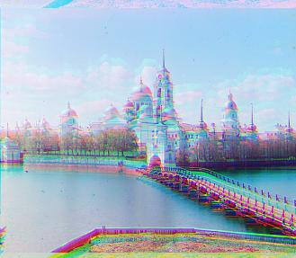

|
This project aims to colorize the Prokudin-Gorskii photo collection using Python image processing techniques. Given the digitized glass plate images, the algorithm extracts the three color channel images, places them on top of each other, and aligns them so that they form a single RGB color image.
The photo collection consists of image files each containing three glass plate negatives in the order BGR. Thus, given a file, we split it into the three channels, and then align each of them over each other to produce the full-color image. In my algorithm, I used blue as the reference channel, aligning green and red to it, since this method was found to generate the best results.
The alignment functions align_channel, pyramid_align, and edge_align each determine the best offset to optimize alignment of the color channels using the sum of squared differences (SSD) with some differences in complexity and strategy.
$$SSD = \sum^n_{i=0} (A_i - B_i)^2 $$- $n=$ total number of values in the array
- $A, B=$ arrays representing the two images to be aligned
Once the channels have been aligned, they are stacked together to create the final color image.
In the naive solution, align_channel, aligns two channels by searching over a window of possible displacements (the range is set to [-15, 15] for both $x$ and $y$ by default). The images are first cropped by a percentage ($8\%$ of the height and width by default). Then, for each possible displacement, the reference channel is kept constant while the other is shifted by the displacement using np.roll, and the SSD is calculated. Throughout this process, a running minimum SSD is updated, and in the end, the optimal displacement is applied.
Low-quality Images (JPG)
 Figure 1: cathedral.jpg aligned using single-scale alignment. G: $(1, -1)$ R: $(7, -1)$ |

Figure 2: monastery.jpg aligned using single-scale alignment. G: $(-6, 0)$ R: $(9, 1)$ |
 Figure 3: tobolsk.jpg aligned using single-scale alignment. G: $(3, 2)$ R: $(6, 3)$ |
High-quality Images (TIF)
 Figure 4: emir.tif aligned using single-scale alignment. G: $(-3, 7)$ R: $(-15, 15)$ |
Figure 5: icon.tif aligned using single-scale alignment. G: $(15, 15)$ R: $(-15, -7)$ |
 Figure 6: melons.tif aligned using single-scale alignment. G: $(15, -4)$ R: $(15, -8)$ |
While single-scale alignment performs well for small images, it is too expensive for large images. To handle large images, multi-scale alignment was implemented using an image pyramid in the function pyramid_align. For two channels to be aligned, the images are first cropped by a predetermined percentage as in single-scale alignment, and then continually resized by $1/2$ $5$ times or until they reach the base case ($size < 32$); each of these resized images is then stored in the pyramid along with the original. Iterating from coarsest to finest resolution, the images are aligned using single-scale alignment which outputs an offset. The offsets from each level in the pyramid are accumulated into one final offset, accounting for the different scaling factors of each image.
Low-quality Images (JPG)
 Figure 7: cathedral.jpg aligned using multi-scale alignment. G: $(5, 2)$ R: $(12, 3)$ |
Figure 8: monastery.jpg aligned using multi-scale alignment. G: $(-3, 2)$ R: $(3, 2)$ |
Figure 9: tobolsk.jpg aligned using multi-scale alignment. G: $(3, 2)$ R: $(6, 3)$ |
High-quality Images (TIF)
 Figure 10: emir.tif aligned using multi-scale alignment. G: $(49, 24)$ R: $(152, -384)$ |
 Figure 11: church.tif aligned using multi-scale alignment. G: $(25, 4)$ R: $(59, -4)$ |
Figure 12: three_generations.tif aligned using multi-scale alignment. G: $(53, 14)$ R: $(112, 11)$ |
|
Figure 13: melons.tif aligned using multi-scale alignment. G: $(82, 10)$ R: $(179, 13)$ |
Figure 14: onion_church.tif aligned using multi-scale alignment. G: $(51, 26)$ R: $(108, 36)$ |
 Figure 15: train.tif aligned using multi-scale alignment. G: $(42, 5)$ R: $(87, 32)$ |
|
Figure 16: icon.tif aligned using multi-scale alignment. G: $(41, 17)$ R: $(89, 23)$ |
 Figure 17: self_portrait.tif aligned using multi-scale alignment. G: $(78, 29)$ R: $(176, 37)$ |
 Figure 18: harvesters.tif aligned using multi-scale alignment. G: $(59, 16)$ R: $(124, 13)$ |
|
Figure 19: sculpture.tif aligned using multi-scale alignment. G: $(33, -11)$ R: $(140, -27)$ |
 Figure 20: lady.tif aligned using multi-scale alignment. G: $(49, 9)$ R: $(111, 11)$ |
Automatic Cropping
Rather than cropping images using a predefined percentage, automatic cropping was implemented to use edge detection to remove borders while preserving as much of the original image content as possible. For each color channel, an edge map is generated. First, contrast is increased and Gaussian blur is applied to reduce noise. Then skimage.filters.sobel is used to detect the edges in the image. Given the edge maps, cv2.findContours finds the boundaries of the edges, and cv2.boundingRect computes the smallest bounding box that fully contains each contour. For all three channels, the minimum height and width of the bounding box is taken and used as the final dimensions to crop the images.
With automatic cropping, emir.tif was able to be aligned successfully.
|
emir.tif aligned using single-scale alignment after cropping by a fixed percentage (Figure 4). G: $(-3, 7)$ R: $(-15, 15)$ |
emir.tif aligned using multi-scale alignment after cropping by a fixed percentage (Figure 10). G: $(49, 24)$ R: $(152, -384)$ |
Figure 21: emir.tif aligned using multi-scale alignment after automatic cropping. G: $(-61, 36)$ R: $(-5, 54)$ |
The fully colored result is a larger image, closer to the original size, compared to the images produced with the initial strategy of using a fixed percentage to crop the borders. While the resulting image is larger, this comes at the cost of a less accurate alignment for some of the files. This is hypothesized to be due to the inclusion of more noisy data on the borders of the image along the black outlines. On the other hand, the initial method of cropping $8\%$ of the height and width focuses on the more important data well within the borders which produces a noticeably better alignment in some cases. To mitigate these issues with automatic cropping, edge-detection alignment was explored as a potential solution.
Edge-detection Alignment
Rather than RGB similarity, in the function edge_align, alignment of the channels was done based on the edges. After cropping, the edge maps of the channels were generated using skimage.filters.sobel. Then, pyramid_align was run on these edge maps to determine the optimal offset. The channels were shifted using these offsets, and then stacked to produce the final color image.
Low-quality Images (JPG)
|
Figure 22: cathedral.jpg aligned using edge-detection alignment after automatic cropping. G: $(0, 4)$ R: $(7, 4)$ |
Figure 23: monastery.jpg aligned using edge-detection alignment after automatic cropping. G: $(-12, 0)$ R: $(-6, -1)$ |
 Figure 24: tobolsk.jpg aligned using edge-detection alignment after automatic cropping. G: $(-3, 0)$ R: $(0, -1)$ |
High-quality Images (TIF)
|
Figure 25: emir.tif aligned using edge-detection alignment after automatic cropping. G: $(-62, 35)$ R: $(-4, 52)$ |
 Figure 26: church.tif aligned using edge-detection alignment after automatic cropping. G: $(-29, -1)$ R: $(4, -43)$ |
Figure 27: three_generations.tif aligned using edge-detection alignment after automatic cropping. G: $(295, 102)$ R: $(153, 101)$ |
 Figure 28: melons.tif aligned using edge-detection alignment after automatic cropping. G: $(17, 0)$ R: $(49, 0)$ |
 Figure 29: onion_church aligned using edge-detection alignment after automatic cropping. G: $(52, 24)$ R: $(107, 35)$ |
Figure 30: train.tif aligned using edge-detection alignment after automatic cropping. G: $(-35, -63)$ R: $(9, 34)$ |
|
Figure 31: icon.tif aligned using edge-detection alignment after automatic cropping. G: $(42, -49)$ R: $(297, 117)$ |
 Figure 32: self_portrait.tif aligned using edge-detection alignment after automatic cropping. G: $(-46, 44)$ R: $(113, 54)$ |
 Figure 33: harvesters.tif aligned using edge-detection alignment after automatic cropping. G: $(71, -6)$ R: $(186, 3)$ |
 Figure 34: sculpture.tif aligned using edge-detection alignment after automatic cropping. G: $(2, -15)$ R: $(48, -33)$ |
Figure 35: lady.tif aligned using edge-detection alignment after automatic cropping. G: $(-81, 18)$ R: $(-15, -6)$ |
In conclusion, edge-detection alignment used in conjunction with automatic cropping produced, on average, the highest quality results, preserving the original image content as much as possible.
|
train.tif aligned using multi-scale alignment after cropping by a fixed percentage (Figure 15). G: $(42, 5)$ R: $(87, 32)$ |
Figure 36: train.tif aligned using multi-scale alignment after automatic cropping. G: $(-33, -61)$ R: $(73, 13)$ |
train.tif aligned using edge-detection alignment after automatic cropping (Figure 30). G: $(-35, -63)$ R: $(9, 34)$ |
However, for church.tif, harvesters.tif, and lady.tif, using fixed-percentage cropping with either pyramid_align or edge_align led to better alignments, though sacrificing some of the original visual data along the borders.
|
Figure 37: church.tif aligned using edge-detection alignment after cropping by a fixed percentage. G: $(25, 4)$ R: $(58, -4)$ |
church.tif aligned using multi-scale alignment after cropping by a fixed percentage (Figure 11). G: $(25, 4)$ R: $(59, -4)$ |
church.tif aligned using edge-detection alignment after automatic cropping (Figure 26). G: $(-29, -1)$ R: $(4, -43)$ |
 Figure 37: lady.tif aligned using edge-detection alignment after cropping by a fixed percentage. G: $(56, 9)$ R: $(120, 13)$ |
lady.tif aligned using multi-scale alignment after cropping by a fixed percentage (Figure 20). G: $(49, 9)$ R: $(111, 11)$ |
lady.tif aligned using edge-detection alignment after automatic cropping (Figure 34). G: $(-81, 18)$ R: $(-15, -6)$ |